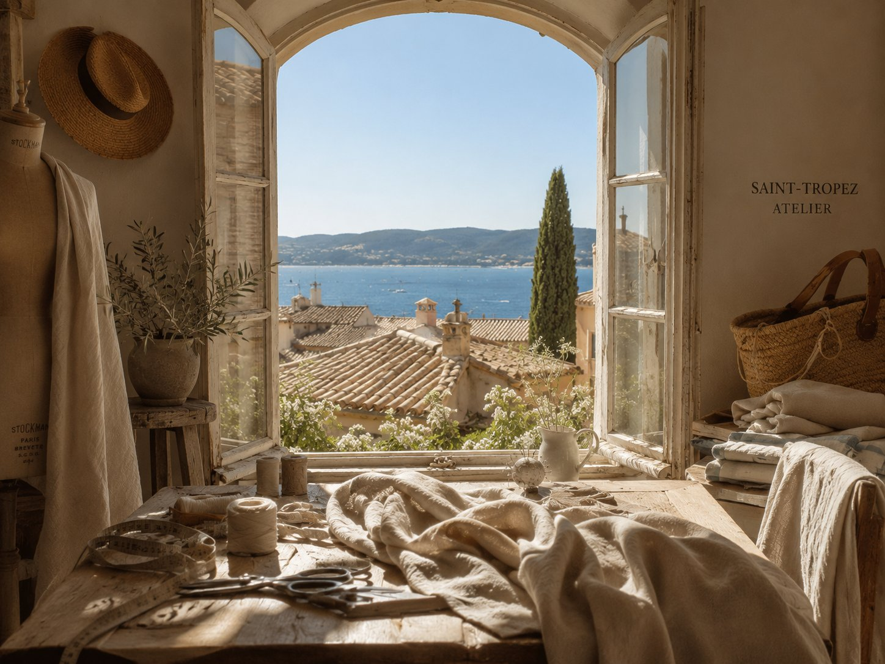
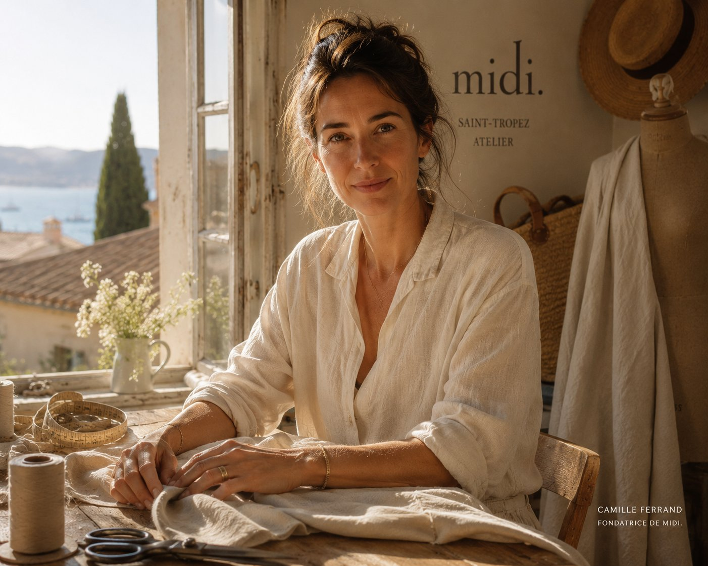
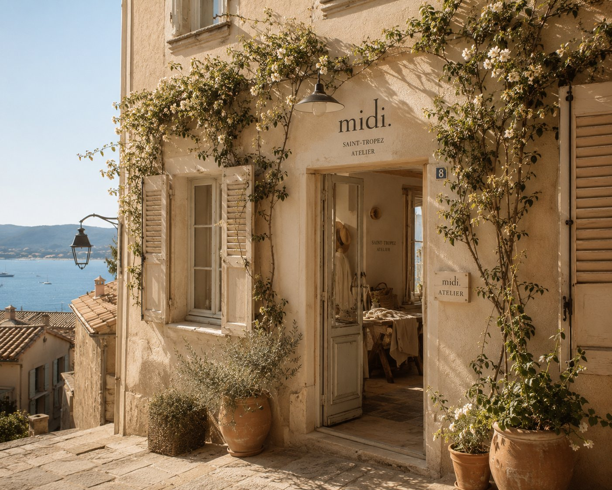
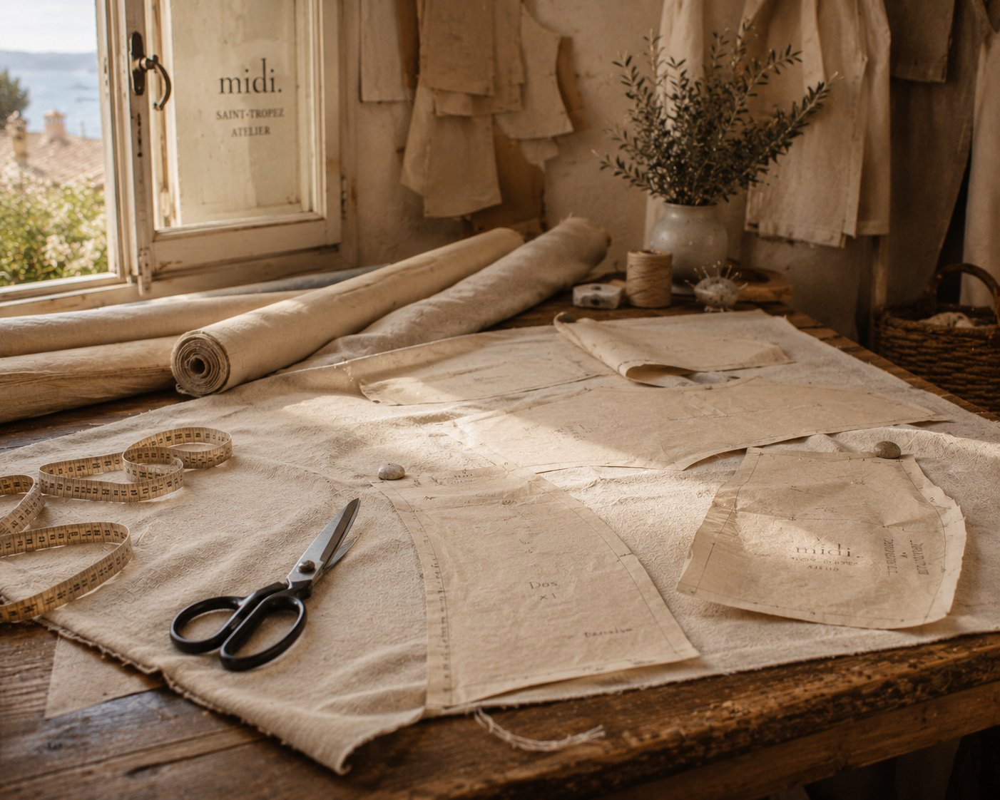
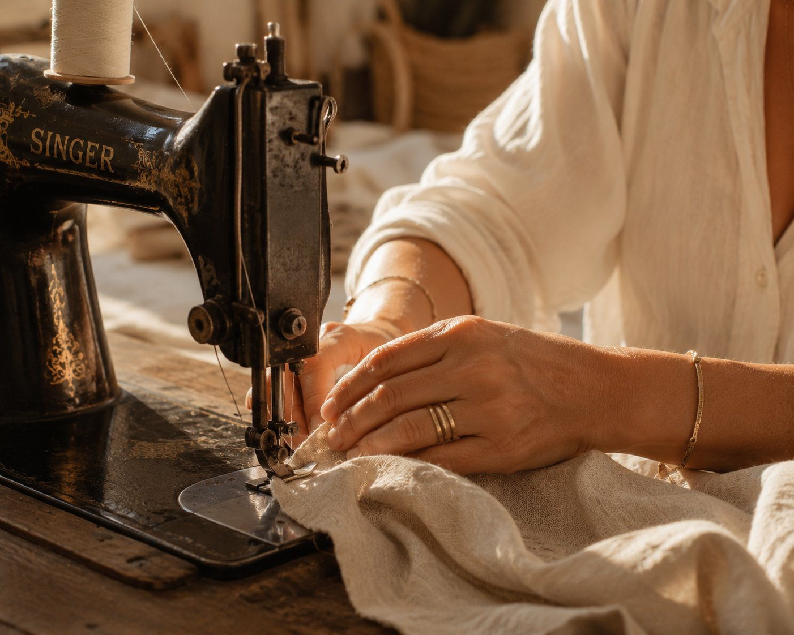
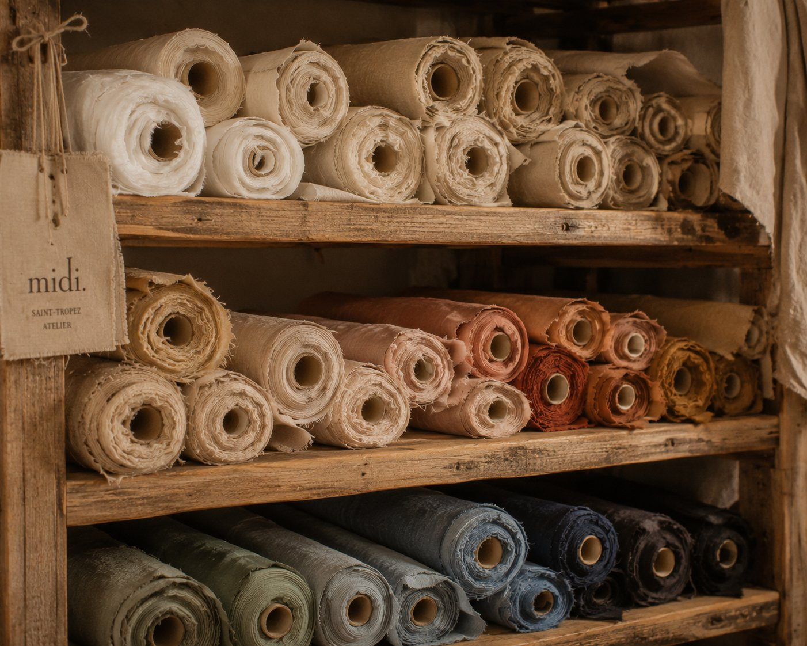
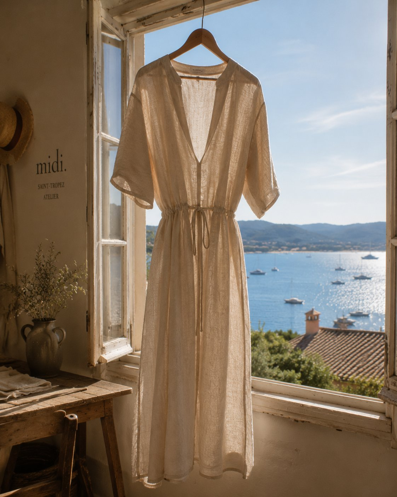

2019
Naissance
Premier atelier, six silhouettes, une conviction.

La Maison
midi. est née d'une conviction simple : la mode devrait se juger à l'heure la plus honnête de la journée.

La Fondatrice
Formée dans les ateliers parisiens, Camille Ferrand revient en 2019 dans son Golfe natal avec une frustration précise : la mode se dessine sous des lumières de studio, jamais sous celle qui compte vraiment. midi. naît de ce constat — une maison qui taille, essaie et présente chaque pièce à l'heure où le soleil ne laisse rien passer.
« Je ne voulais plus habiller des silhouettes imaginaires. Je voulais habiller la lumière que je connais. »
Depuis 2019
Ce Qui Ne Change Pas
01
Nous ne retouchons rien. Ce que vous voyez à midi, c'est ce que vous porterez.
02
Trois matières par saison, choisies pour leur mémoire du soleil. Jamais une de plus.
03
Six silhouettes. Aucune rupture de série, aucune réédition.

L'Atelier
Dix mains, une seule adresse. L'atelier midi. tient dans une bastide du Golfe de Saint-Tropez, fenêtres ouvertes sur les collines — la lumière qui habille nos pièces est la même que celle qui éclaire la table de coupe.
Chemin des Salins, Saint-Tropez — sur rendez-vous
Dans l'Atelier




Voir Aussi